DEMO: AR CONTENT
IDEATION & PROTOTYPE
1. What to present in the AR layer of this application?
1.1 Define the features of AR content
Back at that point, it was not easy for students to access wearable AR devices, like Microsoft HoloLen or Magic Leap One. Therefore, I decided to work on a handheld mobile device, like a smartphone or a tablet. Unlike wearable AR devices, users using handheld devices would lose at least one hand’s freedom.
So, my first thought about the project was: “the contents presented in the AR interface should be either intriguing or important enough to motivate people to take out their mobile device and open the application,” especially when AR experience is the main content of an application.
1.2 Brainstorm
Again and Again, I imagined the image of a people holding a mobile device. Finally, another image overlayed with it. Holding a smart mobile device is a modern metaphor for holding a magnifying glass.

1.3 Define the role of AR content
Then I decided the content of the AR layer was “the answer of an interesting question.” Design the target of AR (the reality layer) as the “question” and the computer-generated images (the AR layer) as the “answer.”
1.4 Define the size of AR content
This project’s scale is “table-size,” since presenting the full size of the virtual contents is out of the scope of the current technology.
2. How to present the content in the layer of AR (the "answer") and reality (the "question")?
2.1 Decide the target type of AR
There are many types of AR targets, like markers, images, 3d objects, etc. In order to create a story consisted of AR content and real content, it demands both parts able to express detailed and meaningful information. In this sense, target-based AR with images as its target type was my best choice.
2.2 Write the story
-
Tell the story from the perspective of aliens. The bird is a kind of creature too familiar to us, even children. Therefore, I thought it might be more intriguing to take the perspective from someone who never saw a bird, say aliens from a remote planet! It would be interesting for readers to learn about what these aliens would behave when they first land on the Earth and discover birds.
-
Tell the story like a puzzle. Solving puzzles is an active learning process. Therefore, I decided to integrate birds’ knowledge in a puzzle-solving process, expecting to create a more fun and effective learning experience.
2.3 Design the image targets and the AR overlays
In the current market, most books employing AR technology are simply using it to provide the 3d presentations of the contents on the pages. I think there are other two easily overlooked aspects of using AR in the traditional books (at least in terms of handheld devices):
-
It allows readers a chance to quickly switch between contents that are more abstract and more concrete.
-
Normally, checking AR contents would happen after reading the printed contents.
How to make good use of the three features of AR to convey information more effectively?
I decided to design the image target as the “hinds” of the AR overlay so that my reader would have some clues about the contents that would appear in the AR layer but won’t see the scenes described in the story. It would prompt them to check out the AR contents actively.


3. What other features would the application need and how to combine them with the AR content?
Considered the limitation of time, I hadn’t designed other functions for the application when I did it as a midterm AR project. During the summer break, I added more features to this project.
3.1 Identify & Design Other Features
Here is a Competitive Study aiming at identifying the other features needed for this AR application.
The five precedents: 1. Wonderland AR / 2. Tiny Little Prince AR / 3. FarSight XR / 4. Goodnight Lad / 5. Zbooks.
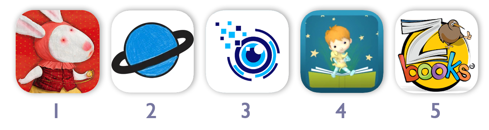 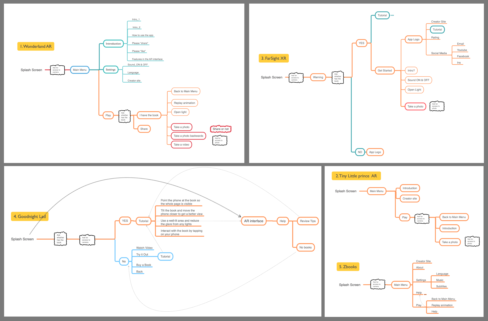

3.2 Interaction Map
Combined with the contents of this project and the study of the precedents, I designed Interaction Map.

3.3 On-screen UI

 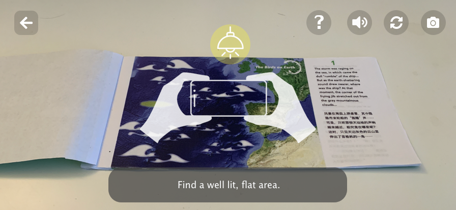
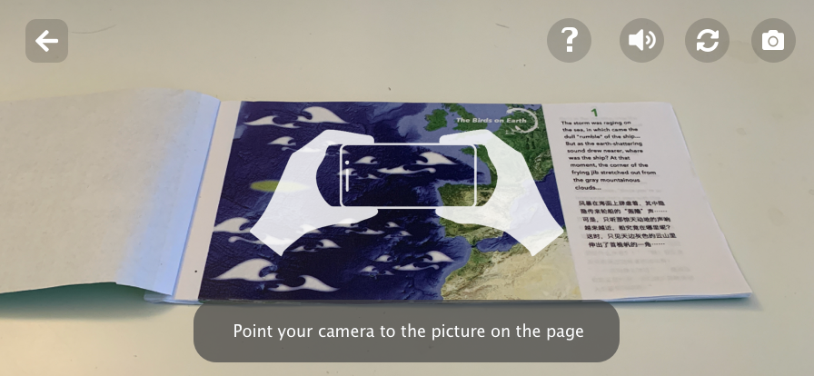
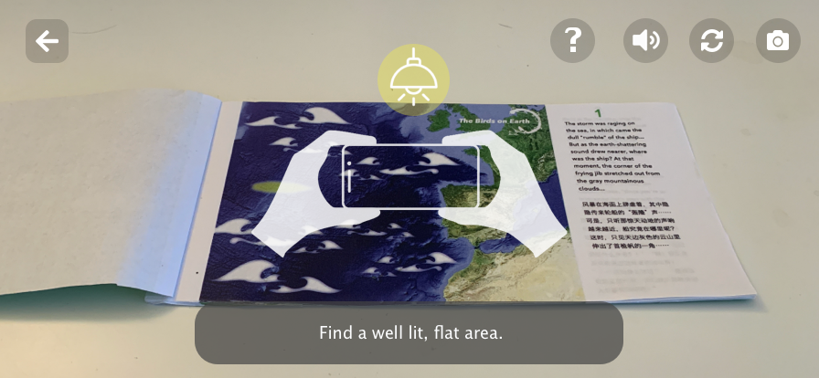
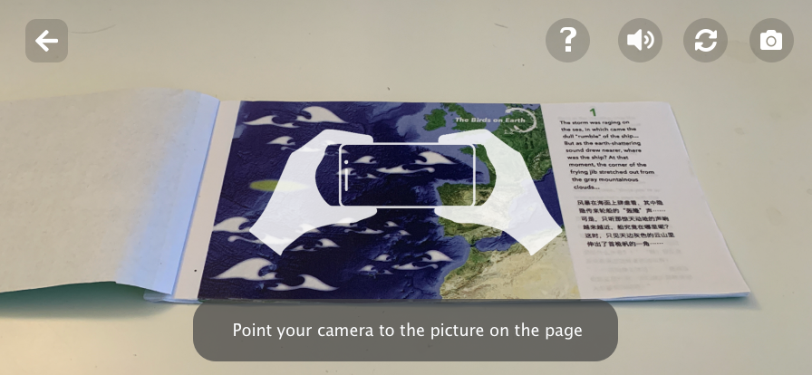
 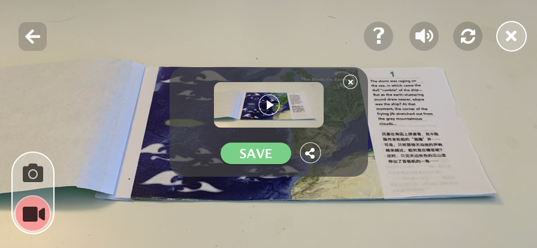
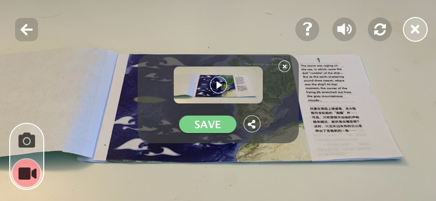
3.4 Persistent controls in the AR interface
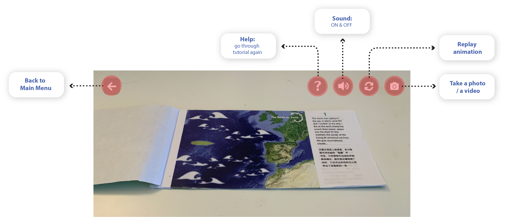IMPLEMENTATION
-
Found and created the assets for AR content The assets include the sounds of the birds & environment, 3d models, and video clips.
-
Building scenes and programming in Unity 3d.
-
Designing covers for the storybook.

REFLECTION
I learned how to prototype AR experience through Unity 3d starting from this project. It opened my eyes to the possibilities and the limitations of this emerging technology, which became a solid foundation for all the design practice afterward. However, as a beginner to Unity 3d at that point, I spent most of the time to crack the technical issues, which left holes in the design process, like:
-
hadn’t done enough research to identify other features of the application.
-
hadn’t designed the book and the application in a way that would prompt users to read the printed contents first.
-
hadn’t done enough research to study the guideline for designing mobile applications for children.
-
hadn’t done a Literature Review to learn from the current AR application design guideline.
Redesign
After I finished the project, I checked the AR application design guideline from Google and Apple. And found that there were some places I needed to improve to create an AR experience that’s more engaging, intuitive, and comfortable for users.
-
Add a Walkthrough before the Main Menu launch, which would explicitly communicate the intent of camera usage, and other usages before users encounter permission prompts afterward. It would help novice AR application users understanding why they need to give these permissions which might not required for most 2d applications.
-
Add a Walkthrough to show users that the scale of this AR experience is table-size. It would clearly tell users the requirements and expectations of this AR application in terms of the size of its physical environment.
-
Encourage movement in the Tutorial. It would help novice users to understand AR experience.
-
Allow users to leave the Tutorial at any point.
-
Set the default of the sound muted when users first enter the AR experience but encourage them to turn on the sound to enjoy a more fulfilling experience. It would give users the fully control of the audio.
-
When the tracking is lost, play an OnScreen animation together with the texts beneath to remind users of the status of the device.
-
Hide other OnScreen controls when the Tutorial is playing, to engage users more on the contents of the Tutorial.
-
Scale down the persistent OnScreen control to 44pt x 44pt which is the minimum tappable area size recommended by Apple. It would “devote as much of the screen as possible to displaying the physical world and your app’s virtual object”.
 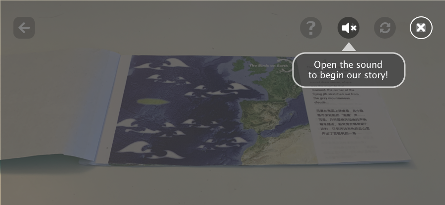
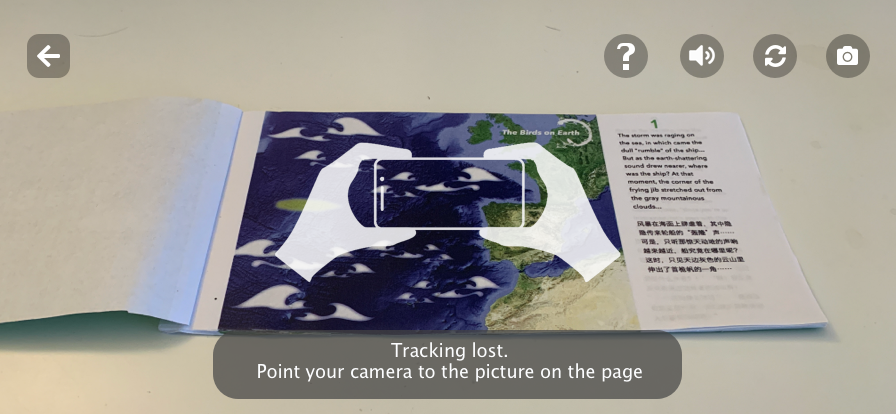
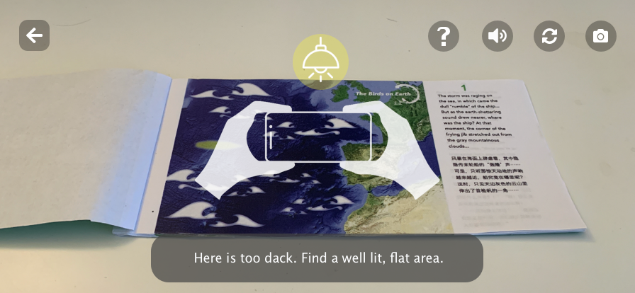
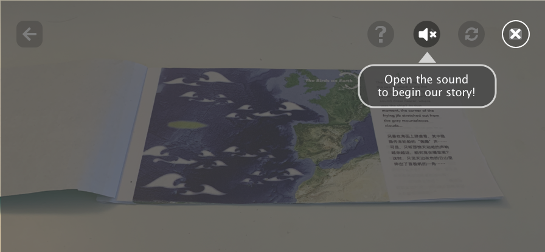
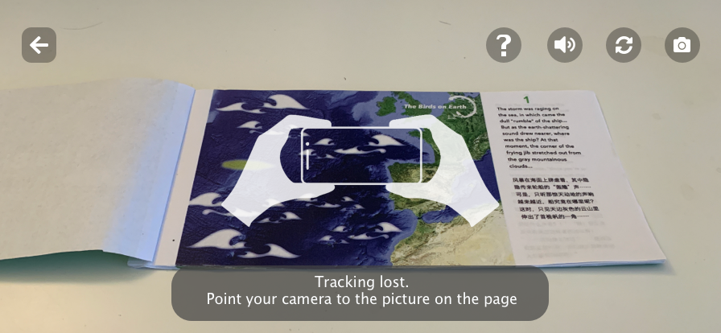
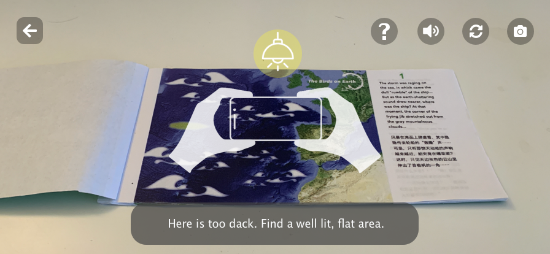
Next Step
-
Add contents of other species of birds, and set one species per chapter.
-
Ask a question about the contents at the beginning of every chapter to ensure users read printed content before checking out the AR content. Conduct a usability testing to evaluate the application, and get insights for the next design iteration.
-
Add an AR experience that would enable users to interact with the virtual objects.
-
Add a feature that would enable users to experience the corresponding VR mode.